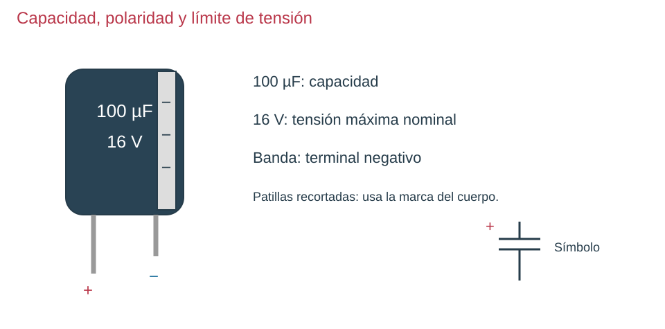

Contenido
Actividades a tu ritmo
Abrir actividades sin cronómetro y con teclado (ventana nueva). Incluyen todas las preguntas de esta página, sus soluciones y explicaciones. Puedes elegir esta vía en lugar de los juegos del final.
Un condensador tiene dos conductores separados por un aislante. Acumula cargas opuestas y almacena energía en el campo eléctrico. Su capacidad se expresa en faradios; son habituales µF y nF. No es una pila ni mantiene indefinidamente cualquier carga.

Carga y descarga
Con una resistencia en serie, la tensión del condensador no cambia bruscamente. Durante la carga se acerca a la tensión de alimentación; al descargar a través de una resistencia se acerca a cero. La corriente es mayor al comienzo y disminuye después.
La constante de tiempo es τ = R · C, con R en Ω y C en F. A un tiempo τ, la carga alcanza aproximadamente el 63 % de la tensión final; la descarga conserva aproximadamente el 37 % de la tensión inicial. Hacia 5τ el proceso está prácticamente completado.
Montaje guiado
Usa 5 V, una resistencia de 10 kΩ y un condensador electrolítico de 100 µF con tensión nominal superior a 5 V. Conecta el positivo del condensador a la resistencia y su negativo a 0 V. Mide la tensión del condensador en paralelo. Para descargar, desconecta la alimentación y conecta la resistencia entre sus terminales. No lo descargues cortocircuitándolo con un cable.
¿Qué cambia al aumentar la capacidad?
Antes de usar la animación, predice qué ocurrirá al pasar de 100 a 200 µF con la misma resistencia. En el apartado 2 del informe, anota valores, constante de tiempo, observación y explicación. Distingue los datos del modelo de los medidos en un componente real.
Verdadero o falso
Decide si la afirmación es verdadera o falsa y contrasta la explicación.
00:00: